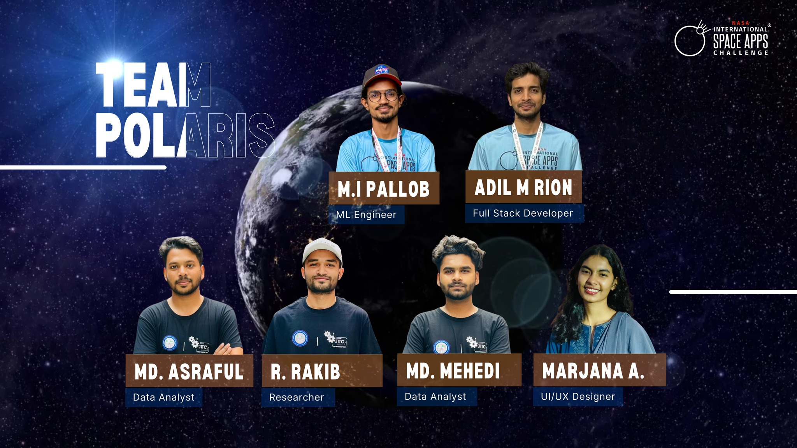

SaveFood — Behavioral ML for Food Waste
Trained XGBoost on IoT time-series data to predict spoilage (F1: 0.89). Dashboard visualizes waste reduction impact and socio-economic benefits.
XGBoost
IoT
SHAP
I develop interpretable machine learning frameworks to detect social engineering, model behavioral risk, and predict socio-technical system failures.
Space Apps 2025 Global Nominee & Winner (Barisal)
Accepted Publications in Socio-Economic ML
IEEE & IEEE Computer Society Member
I was part of Team Polaris, which won the Barisal Division championship. Our team combined expertise in ML, full-stack development, data analysis, and UI/UX design to create a winning solution.

I work at the intersection of Artificial Intelligence, behavioral modeling, and socio-technical system resilience. My research focuses on developing systems that are not only accurate but explainable, fair, and grounded in real human behavior.
Detecting social engineering through interpretable behavioral anomaly modeling.
Predicting system failures using socio-economic and IoT data integration.
Building continual learning frameworks for dynamic, evolving environments.
Collaborative Success
Leading Team Polaris to NASA Space Apps Victory.
Trained XGBoost on IoT time-series data to predict spoilage (F1: 0.89). Dashboard visualizes waste reduction impact and socio-economic benefits.
ML model to identify high-risk urban segments using traffic patterns and accident history data (Precision: 84%).
NASA NEO data platform with real-time 3D visualization. Champion, NASA International Space Apps Challenge 2025.
Real-time farm monitoring and ML-driven decision support system for smallholder farmers to optimize yield.
Engineered a distributed, scalable platform integrating LLM agents and resilient proxy routing for automated social media content generation and task execution at scale.
Focused on Socio-Economic ML & Behavioral Analysis
Hasan, M. M., Rakib, R., Molla, M. A., Borhan, R., Based, M. A.
Hasan, M. M., Mahin, A. A., Chakraborty, S., Afrose, M., Mia, M. A., Based, M. A.
Hasan, M. M., Pallob, M. M. I., Based, M. A.
Hasan, M. M., Mahin, A. A., Afrose, M., Based, M. A.
Hasan, M. M., Hossain, M. A., Mahin, A. A., Khatun, F.
Afrose, M., Hasan, M. M., Mahin, A. A., Based, M. A.
Mahin, A. A., Hasan, M. M., Rakib, R., Molla, M. A., Based, M. A.
Hasan, M. M., Rahman, M. M., Mrida, M. A. R., Based, M. A.
Biswas, S., Hasan, M. M., Mahin, A. A., Afrose, M., Based, M. A.
Mrida, M. A. R., Hasan, M. M., Ausaf, S. M. N., Ray, P. C., Based, M. A.
Hasan, M. M., Mahin, A. A., Afrose, M., Based, M. A.
Asif, M., Hasan, M. M., Based, M. A.
Mahin, A. A., Hasan, M. M., Afrose, M., Mia, M. A., Based, M. A.
Rakib, R., Hasan, M. M., Molla, M. A., Based, M. A.
Rahman, M. M., Hasan, M. M., Based, M. A.
Molla, M. A., Rakib, R., Hasan, M. M., Rion, A. M., Based, M. A.
Molla, M. A., Hasan, M. M., Rakib, R., Borhan, R., Based, M. A.
Hasan, M. M., Molla, M. A., Rakib, R., Borhan, R., Based, M. A.
Rakib, R., Molla, M. A., Hasan, M. M., Borhan, R., Based, M. A.
General Secretary
DIU CSE Speakers Club
Event Coordinator
DIU Computer Programming Club
Executive Member
BASIS Students' Forum (DIU)
Student Member
IEEE & IEEE Computer Society
Status
Open for Research Collaborations